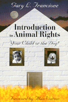

A guidebook for examining our personal and ethical beliefs about human treatment of animals
A guidebook for examining our personal and ethical beliefs about human treatment of animals


 A guidebook for examining our personal and ethical beliefs about human treatment of animals
A guidebook for examining our personal and ethical beliefs about human treatment of animals

|  |
Introduction to Animal RightsYour Child or the Dog?Gary L. Francione, foreword by Alan Watsonpaper EAN: 978-1-56639-692-9 (ISBN: 1-56639-692-1) |
"A clearly written, passionately argued, and compelling and convincing call for widening our circle of moral sympathy and concern. Anyone who cares about animals must read this book, with care. Anyone who loves animals will read this book, with gratitude."
—Jeffrey Moussaieff Masson, author of When Elephants Weep: The Emotional Lives of Animals
Two-thirds of Americans polled by the Associated Press agree with the following statement: "An animal's right to live free of suffering should be just as important as a person's right to live free of suffering." More than 50 percent of Americans believe that it is wrong to kill animals to make fur coats or to hunt them for sport. But these same Americans eat hamburgers, take their children to circuses and rodeos, and use products developed with animal testing. How do we justify our inconsistency?
In this easy-to-read introduction, animal rights advocate Gary Francione looks at our conventional moral thinking about animals. Using examples, analogies, and thought-experiments, he reveals the dramatic inconsistency between what we say we believe about animals and how we actually treat them.
Introduction to Animal Rights: Your Child or the Dog? provides a guidebook to examining our social and personal ethical beliefs. It takes us through concepts of property and equal consideration to arrive at the basic contention of animal rights: that everyone—human and non-human—has the right not to be treated as a means to an end. Along the way, it illuminates concepts and theories that all of us use but few of us understand—the nature of "rights" and "interests," for example, and the theories of Locke, Descartes, and Bentham.
Filled with fascinating information and cogent arguments, this is a book that you may love or hate, but that will never fail to inform, enlighten, and educate.
Excerpt available at www.temple.edu/tempress
"In this brilliantly argued and very clear and accessible book, Gary Francione argues that the moral significance of animals necessitates that we reject the use and treatment of animals as resources or as property. If we take animal interests seriously, we must abolish and not merely regulate our use of animals for food, research, and entertainment. This book is required reading for anyone interested in clear thinking about the human/animal relationship."
—Drucilla Cornell, Rutgers University
"In this splendidly clear and original book, Gary Francione demonstrates the profound flaw in our thinking about animals and their moral status. He brings to light the clash between the principles to which we take ourselves to be committed, and the reality we live, a reality shaped by the conception of animals as property."
—Cora Diamond, University of Virginia
"Gary Francione claims that most of us are morally schizophrenic and demonstrates well that there often is a wide gulf between what we claim is due to other animals and what we actually do to them. He argues that animals have a right not to be viewed as things; their lives do matter, they have interests, and they should be firmly entrenched in the moral community."
—Marc Bekoff, University of Colorado
"[Francione] lays out his argument simply and forcefully...[the book is] a frank, lucid polemic that belongs on every 'animal-lover's' bookshelf."
—Vegetarian Voice
Read an article from the Philadelphia City Paper, 7 September 2000, written by Vance Lehmkuhl.
Foreword – Alan Watson
Acknowledgments
Introduction
1. The Diagnosis: Our Moral Schizophrenia about Animals
2. Vivisection: A Trickier Question
3. The Cause of Our Moral Schizophrenia: Animals as Property
4. The Cure for Our Moral Schizophrenia: The Principle of Equal Consideration
5. Robots, Religion, and Rationality
6. Having Our Cow and Eating Her Too: Bentham's Mistake
7. Animal Rights: Your Child or the Dog?
Appendix: Twenty Questions (and Answers)
Notes
Index
Photographs
 | Gary L. Francione is Professor of Law and Nicholas de B. Katzenbach Scholar of Law and Philosophy at Rutgers University Law School, Newark. He is the author of Animals, Property, and the Law and Rain Without Thunder: The Ideology of the Animal Rights Movement (both Temple). |
Animals and Society
Philosophy and Ethics
© 2015 Temple University. All Rights Reserved. This page: http://www.temple.edu/tempress/titles/1359_reg.html.